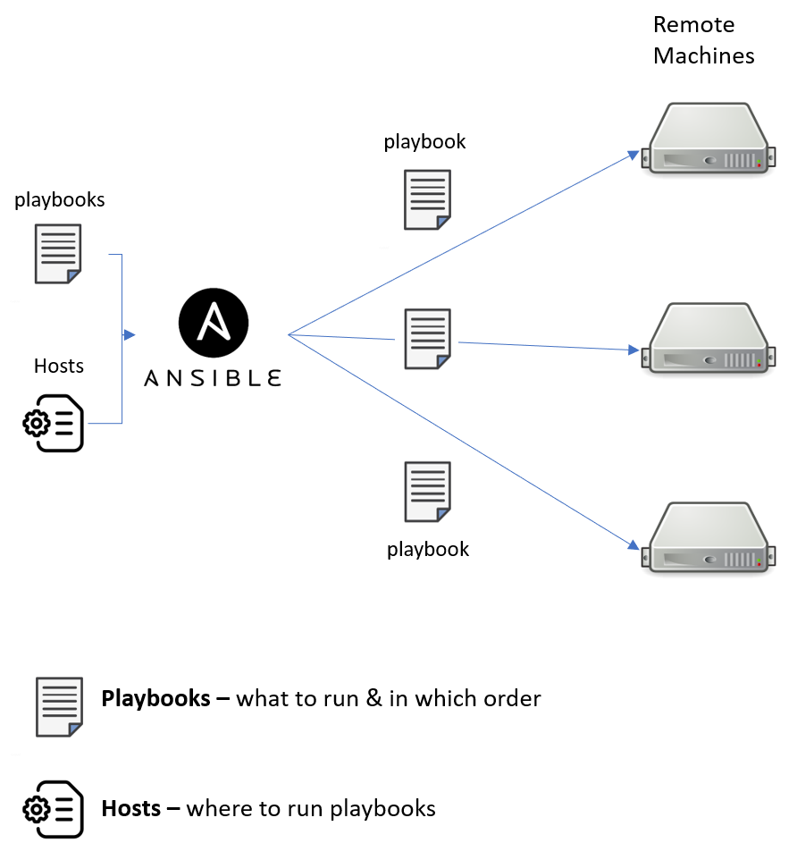
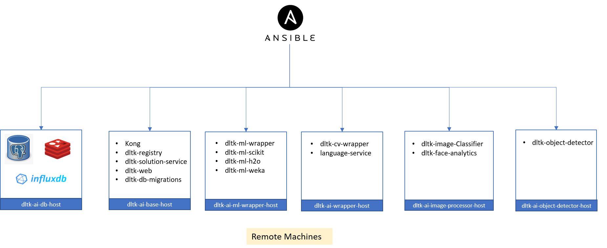
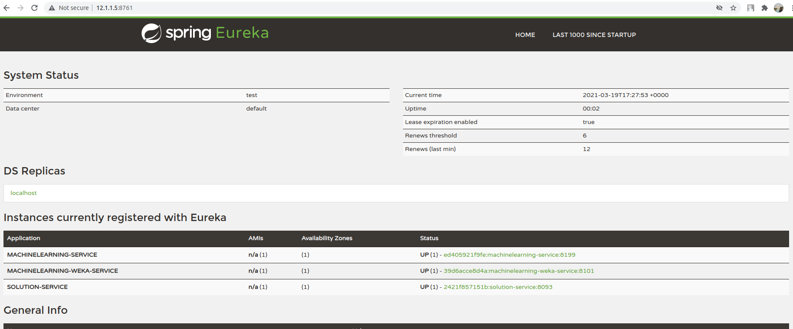

OpenDLTK on multiple machines¶
Table of Contents
About¶
As these AI models are computationally heavy and require higher RAM, its difficult to run all the services to run on local or single machine, So in order to run these services smoothly its recommended to deploy OpenDLTK on multiple machines.
See also
OpenDLTK Services for more details on services present in OpenDLTK
Getting Started¶
For simple deployment of OpenDLTK on multiple instances we will use Ansible.
{kind=link}
What is Ansible?
Ansible is a simple automation tool that automates software application deployment, cloud provisioning, and configuration management.
It’s a server orchestration tool that helps you to manage and control a large number of remote servers from single machine called Control Machines where ansible is installed.
- 1. Ansible Playbook
These are a set of instructions that you send to run on a single or group of server hosts.
- 2. Hosts
It’s an inventory file that contains pieces of information about managed servers by ansible.
- 3. Ansible role
It is a set of tasks to configure a host to serve a certain purpose like configuring a service.
See also
We will use ansible to deploy OpenDLTK services on multiple machines as shown in below diagram.
{kind=link}
Pre-requisites¶
5 to 8 Servers with 2 vCPUs, 8 GB memory, 30GB Disk Space for each machine
Python3 installed on all the machines
Root/Admin privileges
Installation¶
1. Ansible Installation
$ sudo apt update
$ sudo apt install software-properties-common
$ sudo add-apt-repository ppa:ansible/ansible-2.9
$ sudo apt install ansible
To verify whether ansible installation is successful, run below command
$ sudo ansible --version
ansible 2.9.6
config file = /etc/ansible/ansible.cfg
configured module search path = ['/root/.ansible/plugins/modules', '/usr/share/ansible/plugins/modules']
ansible python module location = /usr/lib/python3/dist-packages/ansible
executable location = /usr/bin/ansible
python version = 3.8.5 (default, Jul 28 2020, 12:59:40) [GCC 9.3.0]
For more detailed installation guide, please refer this link
2. Clone openDLTK github repository
$ git clone https://github.com/dltk-ai/openDLTK
3. What this repo contains
Todo
add directory tree
Ansible playbooks & roles, docker-compose files for openDLTK services & configurations files.
2. Initialize DLTK setup
$ cd openDLTKUse the following command to install pip for Python 3:
$ sudo apt install python3-pip $ sudo pip3 install -r requirements.txt $ sudo python3 setup_init.py -m init
3. Updating Configuration
Update config_multi.env
Please update config_multi.env file saved at
/usr/dltk-ai/config_multi.envby referring to Configurations DetailsAnsible Host Configurations
While installing Ansible a hosts file is generated at
/etc/ansible/pathCopy below host file into
/etc/ansible/hostspath[dltk-ai-db-host] XX.XX.XX.XX ansible_user=root ansible_ssh_pass=`YOUR_PASSWORD` [dltk-ai-base-host] XX.XX.XX.XX ansible_user=root ansible_ssh_pass=`YOUR_PASSWORD` [dltk-ai-wrapper-host] XX.XX.XX.XX ansible_user=root ansible_ssh_pass=`YOUR_PASSWORD` [dltk-ai-ml-wrapper-host] XX.XX.XX.XX ansible_user=root ansible_ssh_pass=`YOUR_PASSWORD` [dltk-ai-ml-scikit-host] XX.XX.XX.XX ansible_user=root ansible_ssh_pass=`YOUR_PASSWORD` [dltk-ai-ml-h2o-host] XX.XX.XX.XX ansible_user=root ansible_ssh_pass=`YOUR_PASSWORD` [dltk-ai-ml-weka-host] XX.XX.XX.XX ansible_user=root ansible_ssh_pass=`YOUR_PASSWORD` [dltk-ai-image-processor-host] XX.XX.XX.XX ansible_user=root ansible_ssh_pass=`YOUR_PASSWORD` [dltk-ai-object-detector-host] XX.XX.XX.XX ansible_user=root ansible_ssh_pass=`YOUR_PASSWORD`Please update
XX.XX.XX.XXwith your IP Addresses andYOUR_PASSWORDforrootuserCaution
Please don’t modify host names like (
dltk-ai-object-detector-host,dltk-ai-db-host)Please login to all remote machines using
ssh username@IPaddresscommandTo verify whether ansible host & roles are setup correctly, we will use following commands
$ ansible -m ping all
4. Update config
$ sudo python3 setup.py -m update_configTip
Whenever config_multi.env is changed this command needs to be run, to update those changes.
5. Install Services
Please provide
folderpathwhere you want to install OpenDLTK services on remote machines in all the below commands.Tip
Please use same path in all the remote machines
Docker
To install docker on all the remote machine, below ansible playbook command can be used. This will install docker on all the remote machines.
$ sudo ansible-playbook ansible/playbooks/dltk-ai-docker.yml --extra-vars "folderpath=path/to/folder"Database
Postgres Setup
If you already have a postgres database then you can skip setting up a new postgres container, the details of existing postgres needs to be updated in
/usr/dltk-ai/config_multi.envfile.But in case you dont have an existing postgres database, you need to setup postgres database.
Please update your existing postgres details in
/usr/dltk-ai/config_multi.env, if not already done in configuration step.After Updating
/usr/dltk-ai/config_multi.env, runsudo python3 setup.py -m update_configcommand to update configurations changes.Run below command to setup postgres container
# please go to openDLTK directory $ sudo ansible-playbook ansible/playbooks/dltk-ai-postgres.yml --extra-vars "folderpath=path/to/folder"InfluxDB and Redis Setup
To setup Influxdb and Redis containers on remote machines, run below command.
$ sudo ansible-playbook ansible/playbooks/dltk-ai-db.yml --extra-vars "folderpath=path/to/folder"Base Services
To setup Base Service containers on remote machines, run below command.
Base Service will setup Kong, Registry Service, Solution Service.
$ sudo ansible-playbook ansible/playbooks/dltk-ai-base.yml --extra-vars "folderpath=path/to/folder"Warning
Database and Base are necessary to run below services, so proceed to other service deployment after deploying above two services.
Machine Learning
To setup ML Wrapper Service container on remote machine, run below command
$ sudo ansible-playbook ansible/playbooks/dltk-ai-ml-wrapper.yml --extra-vars "folderpath=path/to/folder"Based on your choice to install ML-Scikit, ML-H2O or ML-weka, run below command respectively.
To setup ML Scikit Service container on remote machine, run below command
$ sudo ansible-playbook ansible/playbooks/dltk-ai-ml-scikit.yml --extra-vars "folderpath=path/to/folder"To setup ML H2O Service container on remote machine, run below command
$ sudo ansible-playbook ansible/playbooks/dltk-ai-ml-h2o.yml --extra-vars "folderpath=path/to/folder"To setup ML Weka Service container on remote machine, run below command
$ sudo ansible-playbook ansible/playbooks/dltk-ai-ml-weka.yml --extra-vars "folderpath=path/to/folder"Computer Vision
For running Computer vision services we will first deploy a wrapper which route the Images, client request to right processor
To setup Computer Vision Wrapper Service container on remote machine, run below command
$ sudo ansible-playbook ansible/playbooks/dltk-ai-cv-wrapper.yml --extra-vars "folderpath=path/to/folder"Based on your choice to install Image Classification, Object Detection, Face Analytics run below command respectively.
Image Classification takes Image as an input & return predicted labels as output in JSON format
To setup Computer Vision Image Classification Service container on remote machine, run below command
$ sudo ansible-playbook ansible/playbooks/dltk-ai-cv-image-classification.yml --extra-vars "folderpath=path/to/folder"See also
For more details on Image Classification features, please refer this section
Object Detection detects Objects in an Image
To deploy Object Detection service, run below command in ansible control machine
$ sudo ansible-playbook ansible/playbooks/dltk-ai-cv-object-detection.yml --extra-vars "folderpath=path/to/folder"See also
For more details on Object Detection features, please refer this section
This service provide state-of-the-art open source AI models & support to various AI engines to provide face analytics on Images
To deploy Face Analytics services, run below command in ansible control machine
$ sudo ansible-playbook ansible/playbooks/dltk-ai-cv-face-analytics.yml --extra-vars "folderpath=path/to/folder"See also
For more details on Face Analytics features, please refer this section
Natural Language Processing
This service provide various NLP features like Name Entity Recognition, Part of Speech and Sentiment Analysis using various open source AI models & supported AI Engines
$ sudo ansible-playbook ansible/playbooks/dltk-ai-nlp.yml --extra-vars "folderpath=path/to/folder"See also
For more detail on NLP features, please refer this section
OpenDLTK Services Status Check
All the OpenDLTK Service will register to registry service while starting and also every 30sec update their status. To check whether services installed are correctly started or not, go to http://your_base_ip_address:8761 and check whether your services are registered or not.
Expected Output
As we can see in this example, Machine Learning Service & Machine Learning Weka Service & Solution Service are setup correctly.
Usage¶
Note
Below code block can be run after DLTK python client SDK is installed. The installation of which is covered in next section here installation .
import dltk_ai
client = dltk_ai.DltkAiClient('YOUR_API_KEY', base_url='http://localhost:8000')
text = "The product is very easy to use and has got a really good life expectancy."
sentiment_analysis_response = client.sentiment_analysis(text)
print(sentiment_analysis_response.text)
import dltk_ai
client = dltk_ai.DltkAiClient('86122578-4b01-418d-80cc-049e283d1e2b', base_url='http://localhost:8000')
text = "The product is very easy to use and has got a really good life expectancy."
sentiment_analysis_response = client.sentiment_analysis(text)
print(sentiment_analysis_response.text)
Stop DLTK Services¶
Natural Language Processing
sudo ansible-playbook ansible/playbooks/dltk-ai-stop-nlp.yml --extra-vars "folderpath=/home/dltk"Machine Learning
sudo ansible-playbook ansible/playbooks/dltk-ai-stop-ml-scikit.yml --extra-vars "folderpath=/home/dltk"sudo ansible-playbook ansible/playbooks/dltk-ai-stop-ml-h2o.yml --extra-vars "folderpath=/home/dltk"sudo ansible-playbook ansible/playbooks/dltk-ai-stop-ml-weka.yml --extra-vars "folderpath=/home/dltk"ML Wrapper
Caution
Run Below command to stop ML-Wrapper only if all the above ML services (ML Scikit, ML H2O, ML weka) are stopped.
sudo ansible-playbook ansible/playbooks/dltk-ai-stop-ml-wrapper.yml --extra-vars "folderpath=/home/dltk"Computer Vision
To stop Image Classification service, run below command
sudo ansible-playbook ansible/playbooks/dltk-ai-stop-cv-image-classification.yml --extra-vars "folderpath=/home/dltk"To stop Object Detection service, run below command in ansible control machine
sudo ansible-playbook ansible/playbooks/dltk-ai-stop-cv-object-detection.yml --extra-vars "folderpath=/home/dltk"To stop Face Analytics services, run below command in ansible control machine
sudo ansible-playbook ansible/playbooks/dltk-ai-stop-cv-face-analytics.yml --extra-vars "folderpath=/home/dltk"CV-Wrapper
To stop CV wrapper, run below command in ansible control machine
Caution
Run below command only if all the above computer vision services like Image Classification, Object Detection & Face Analytics are stopped.
sudo ansible-playbook ansible/playbooks/dltk-ai-stop-cv-wrapper.yml --extra-vars "folderpath=/home/dltk"Base
Caution
Run below command only to stop base service only if all the above services are stopped, as uninstalling base will impact all the DLTK services
sudo ansible-playbook ansible/playbooks/dltk-ai-base.yml --extra-vars "folderpath=/home/dltk"